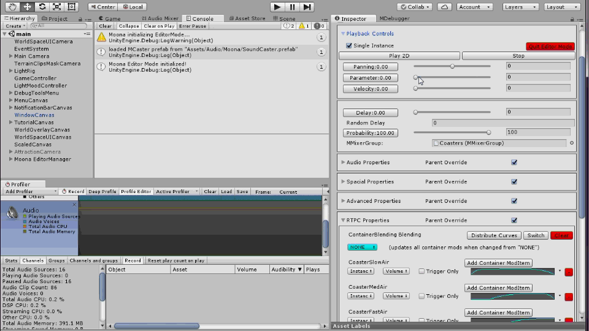

Work
I used to work as an audio programmer at A Shell In The Pit Audio where I developed our audio tool chain.
TAT
Unity audio extension (2016)
My first audio related programming project was TAT (Tammik AAudio Toolkit). Based on the Unity 3D audio engine's "AudioSource" it extended the engine's audio functionality immensely with "AudioClip", volume & pitch randomization, sequencing, 3D spatialization for VR & AR, cross-fading, layering/blending of sounds through real time parameter control & last but not least voice-management.
Moona
Unity 3D audio middleware tool (early 2017 - 2019)
Moona was the spiritual successor of TAT (see above) and is an evolution of the same concepts. The difference being that I had learned a lot about software architecture since I started programming and I incorporated what I learned to make the tool as stable and easy to use as possible. As proprietary audio tool for A Shell In The Pit Audio it was driving the sound experiences for clients – developing games on mobile, consoles and Virtual Reality.
Moona – like TAT before it – wrapped the Unity 3D AudioSource class. Resources were pooled and a intricate voice management system ensured that the most the important sounds were heard at any given moment.
Auditioning a container blend behaviour without entering PlayMode more screen shots
For Audio Artists
The tools I developed were used in a wide variety of projects across many versions of Unity. I supplied in editor auditioning and all the creative freedom over audio behaviour to sound designers required to create compelling game audio.
For Programmers
Moonas API was designed to be simple – yet powerful. MObject were audio behaviours authored by a sound designer. It might have bene a single looping sound or a complex hierarchy of nested structures. All a programmer had to do was to invoke the Play() method and Moona would handle the rest. To control audio behaviour past the initial trigger Moona handed out MHandles which allowed re-positioning or re-parenting, stopping as well as instance based parameter control (along side the global parameter system).